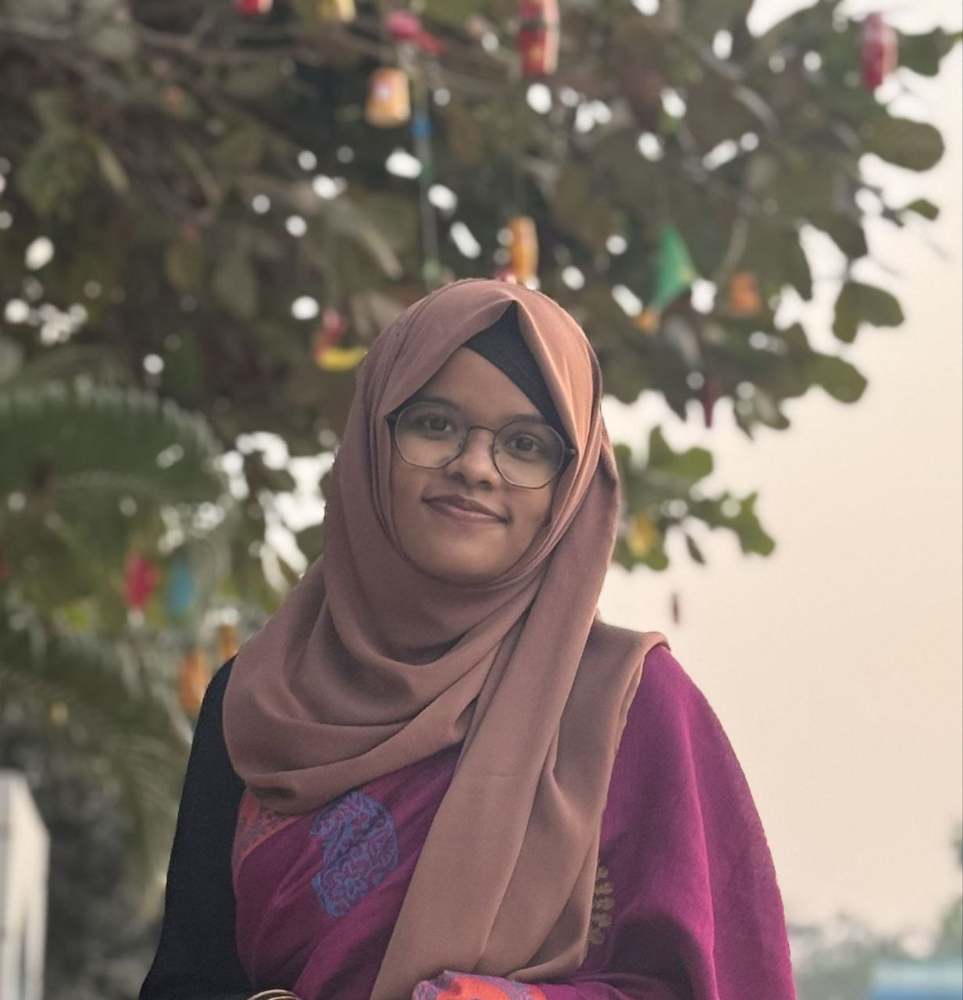

C / C++
Programming fundamentals, problem solving and DSA.
CSE UNDERGRADUATE · PROGRAMMER · LEARNER
I’m a Computer Science & Engineering student passionate about programming, problem solving, technology, and building things that actually work.

I’m currently pursuing my undergraduate degree in Computer Science & Engineering at Daffodil International University. I enjoy turning concepts into working programs and continuously improving my technical skills.
Beyond coding, I like reading, taking part in extracurricular activities, volunteering, and exploring opportunities that help me learn, contribute, and connect with people.
Programming fundamentals, problem solving and DSA.
Object-oriented programming and array-based problem solving.
Lists, stacks, queues, trees, graphs and algorithms.
Visual thinking, design fundamentals and presentation.
EMBEDDED SYSTEMS · ML
An agriculture-focused system that detects leaf disease and monitors soil moisture, with automatic watering when the soil needs it.
ALGORITHMS · C++
A greedy-algorithm based scheduler that prioritizes deliveries using deadlines and profits.
LEARNING PROJECT
I'm continuously building new projects as I learn more about software development and computer science.
Computer Science & Engineering undergraduate.
Experience in club activities, event organization, volunteering and student engagement.
Exploring programming, algorithms, projects and new opportunities to grow.